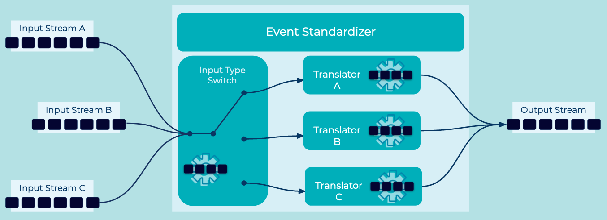

Event Standardizer
In most businesses, a variety of traditional and Event Processing Applications need to exchange Events across Event Streams. Downstream Event Processing Applications will require standardized data formats in order to properly process these Events. However, the reality of having many sources for these Events often results in the lack of such standards or in different interpretations of the same standard.
Problem
How do we process Events that are semantically equivalent, but arrive in different formats?
Solution
 Source all the input Event Streams into an Event Standardizer that passes Events to a specialized Event Translator, which in turn converts the Event to a common format understood by the downstream Event Processors.
Implementation
As an example, we can use the Kafka Streams client library of Apache Kafka to build an Event Processing Application that reads from multiple input Event Streams and then "maps" the values to a new type. Specifically, we use the mapValues function to translate each Event type into the standard type expected on the output Event Stream.
SpecificAvroSerde<SpecificRecord> inputValueSerde = constructSerde();
builder
.stream(List.of("inputStreamA", "inputStreamB", "inputStreamC"),
Consumed.with(Serdes.String(), inputValueSerde))
.mapValues((eventKey, eventValue) -> {
if (eventValue.getClass() == TypeA.class)
return typeATranslator.normalize(eventValue);
else if (eventValue.getClass() == TypeB.class)
return typeBTranslator.normalize(eventValue);
else if (eventValue.getClass() == TypeC.class)
return typeCTranslator.normalize(eventValue);
else {
// exception or dead letter stream
}
})
.to("my-standardized-output-stream", Produced.with(Serdes.String(), outputSerdeType));
Considerations
- When possible, diverging data formats should be normalized "at the source". This data governance is often called "Schema on Write", and may be implemented with the Schema Validator pattern. Enforcing schema validation prior to writing an Event to the Event Stream, allows consuming applications to delegate their data format validation logic to the schema validation layer.
- Error handling should be considered in the design of the standardizer. Categories of errors may include serialization failures, unexpected or missing values, and unknown types (as in the example above). Dead Letter Stream is one pattern commonly used to handle exceptional events in your Event Processing Application.
References
- See also Stream Merger for unifying related streams without changing their format.
- This pattern is derived from Normalizer in Enterprise Integration Patterns by Gregor Hohpe and Bobby Woolf
- Kafka Streams
mapstateless transformation documentation - Error Handling Patterns for Apache Kafka Applications is a blog post with details on strategies and patterns for error handling in Event Processing Applications